I have made my living betting football for a long time, and I want to tell you the thing nobody tells beginners: the model is not the product. The price is the product.
Sportsbooks post a line, say Buffalo −3.5. That line is the market's best guess at a number that makes both sides equally likely, and the books charge you a fee on every bet (the "vig") whichever side you take. If you bet at random you lose the fee, slowly, forever. To win, you need one of two things: either you know the true probability better than the market does (an edge from information), or you find a book charging a better price than the market's true number (an edge from shopping). The second is far more common, far more reliable, and it is where almost all of my money has come from.
This board was built by someone who understood that. It has a model that projects every game, and the model is respectable: over 3,416 NFL games since 2014 it misses the final margin by 10.02 points on average, against 9.91 for the closing line. Close, but not better. "About as accurate as the market" does not pay the vig, and the board does not pretend otherwise. It measures how much of the model's claimed edge has ever turned into money and sizes the bets from that. On the NFL board the answer is almost none: over 2,239 graded bets from 2018 to 2025 the model claimed +4.8% and returned −1.9%. So the NFL model's own opinion stays off the bet card. In college the same measurement said about half, but when the college model was regraded against Pinnacle's real 2024–2025 lines its edge did not hold up, so since November 1 the college model's own bets carry no stake either.
Three places, and the board is built around them in this order:
Everything else on the page, including the model's own leans, is information. Useful, honest information, but not a bet.
Everything on these boards is built from a handful of formulas. You do not need to compute them, but you need to know what they mean.
| −110 | Risk 110 to win 100. Implied chance = 110 / (110 + 100) = 52.4%. This is the break-even for a standard spread bet. |
| +150 | Risk 100 to win 150. Implied chance = 100 / (150 + 100) = 40.0%. |
| −200 | Risk 200 to win 100. Implied chance = 66.7%. |
A book quotes both sides of a spread at −110. Each implies 52.4%, together 104.8%. The extra 4.8% is the book's margin. Remove it and you have the no-vig (fair) chance: 50% each. When the board says "Pinnacle's no-vig number" it means Pinnacle's two prices with the margin taken out, which is the market's honest estimate of each side's chance.
EV per dollar = chance of winning × profit if you win − chance of losing × stake. At −110 with a true 55% chance: 0.55 × 0.909 − 0.45 × 1 = +5.0%. The board shows EV two ways:
Kelly is the stake that grows a bankroll fastest for a given edge: edge divided by the net odds. Full Kelly is far too aggressive when your edge estimate is uncertain, so the board uses quarter Kelly, and caps it three ways:
| Per bet | 3% of bankroll. |
| Per game | 5%, all sides together. If a game's bets add to more, every stake in that game shrinks by the same factor. |
| Per week | 10%, everything on the sheet that week together, scaled the same way. On November 11 the NFL Week 10 sheet came to 3.7%, under the cap; next week's early lines (Week 11) came to 8.7%, also under it. With its model edges unstaked, the college Week 11 sheet came to 5.1%. |
Stakes are shown in dollars at the bankroll in the box at the top of the Games page (default $1,000) and as a percentage. Change the box to your bankroll and every stake on the site follows.
The model's chance is not used as is. Each Tuesday (NFL) and Monday (college) the full backtest measures the share of the model's claimed edge that turned into realized profit over the last eight seasons. The stake is sized from the model's chance shrunk toward the market's by that share. NFL: 11% on November 11 (8% a week earlier and 0% the week before; the measurement is noisy, ±29%), and the model's own NFL edges stay off the card either way. College: measured at 52%, but capped at 0 NEW since November 1, because the college model's edge against consensus lines did not hold against Pinnacle's real 2024–2025 numbers. The college sheet says so in its note. If the measurement is missing, the board sizes nothing rather than everything (it "fails closed").
Opener and wind bets do not need the model to be right; they rest on their bucket's own record. When the model sizes nothing for one of them, the board sizes a bucket stake: quarter Kelly on Pinnacle's chance for that side at the book's own line and price, plus the bucket's edge over a fair line (its win rate shrunk halfway to break-even, less 50%). Two details matter:
Every kind of bet (price, opener, wind, model) is watched against the closing line. Once a kind has 50 or more graded bets and its average closing line value is below zero by more than two standard errors, it carries no stake until it recovers. Its bets stay on the sheet, marked, and stay in the ledger, so the record keeps measuring them. The Bet sheet's note names any kind that is muted. On November 11 no NFL kind had 50 graded bets yet (price bets were at 26), and the college price tier, with 92, was at −0.1% ± 1.1% and so not muted; the Closing line value table on the Model record page shows how close each one is (section 14).
A 6-point teaser moves the line 6 points your way on every leg, and every leg must win. A two-leg teaser at −120 breaks even when each leg wins √(120/220) = 73.9%. The board prices each leg's chance off the market's own key-number curve (no model) and marks those that clear. Wong legs are NFL sides that a 6-point tease carries across both 3 and 7: favorites of −7.5 to −8.5 (teased to −1.5 to −2.5) and underdogs of +1.5 to +2.5 (teased to +7.5 to +8.5). They are the classic teaser legs; price them, do not bet them by rule.
Kalshi is an exchange. Its prices are contract prices in cents, and it charges a fee: about 7% × p × (1−p) per contract to take a price, 1.75% to rest an order. The board converts every Kalshi price to an effective American price net of the fee ("net") before any EV. Where a resting order would be worth posting, the board says "Post on Kalshi at X¢": the highest price at which a maker order is still +EV. That price is now computed against the chance the stakes are sized from, which on the NFL board is Pinnacle's own number. A resting order may never fill.
The Games page opens with a week picker, the "Price bets from" switch (leave it on Market-adjusted), your bankroll, and then the Bet sheet: every bet the board would place this week, grouped by what the edge is made of.
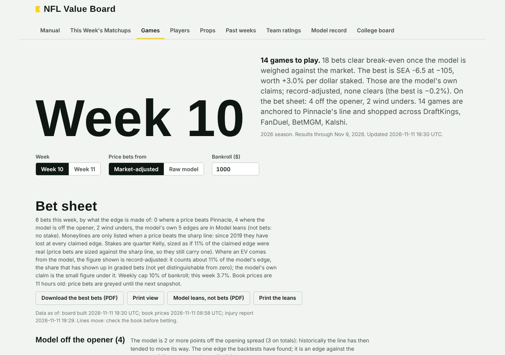
The top of the NFL Games page on November 11. The headline says 18 bets clear break-even on the model's own claims and none once record-adjusted; the Bet sheet has 4 opener bets and 2 wind unders, the model's own five edges are in Model leans, the week uses 3.7% of the 10% cap, and book prices were 11 hours old.
| Download the best bets (PDF) | The week's card as a PDF, rebuilt with every board update (section 7). |
| Print view | The same card in the browser, at your bankroll and selected week. |
| Model leans, not bets (PDF) | What the model thinks that is not a bet: on the NFL board the model's own edges, and every game's lean (section 7). |
| Print the leans | The leans document in the browser. |
Below the buttons, the Data as of line says when the board was built and how old the book prices, injury report and designations are. Read it every time. A price is only as good as its timestamp.
| Tier | What it means | Its record |
|---|---|---|
| Price beats Pinnacle | A retail price beats Pinnacle's no-vig number at that line by 1% or more per dollar, with no model. Take it now at the book named. | +EV against the sharp line by construction. |
| Model off the opener | The model is 2+ points off the opening spread (3+ on totals; college: totals only) and the market has not taken it yet. | NFL spreads 2+: 55.4%, +5.6% on 1,012 bets (+4.3% on 646 since 2019). |
| Wind unders (NFL) | An outdoor under in 10–19 mph of forecast wind, while the total has not already dropped 1.5 points. Half stake. | 498-379-9 since 2014 (56.8%, +10.4% ± 3.2%); 2019 on: 238-164 (59.2%). |
| Model edges | Everything else the market-adjusted projection makes +EV. On the NFL board these are in Model leans. On the college board they are still listed on the sheet, but with no stake NEW (section 15). | Shown on every row. |
Moneylines appear only in the price tier. On the graded bets since the holdout seasons began, model-picked moneylines have lost at every claimed edge.
Week 18 NEW is priced at the market: the model's spreads and moneylines that week are not used for the opener or model tiers or the line-movement alerts, because in Week 18 the model has trailed the closing line by about a point of margin, against about a tenth of a point in every other week. Price bets still count, and totals are unchanged.
Rain and snow NEW: a game forecast to get 2 mm or more of rain, or any snow, during the game window carries a "Rain N mm" or "Snow forecast" tag on its card, its page, the Matchups views and the Model leans document. It is information only; nothing is staked on it until the forecasts have been graded.
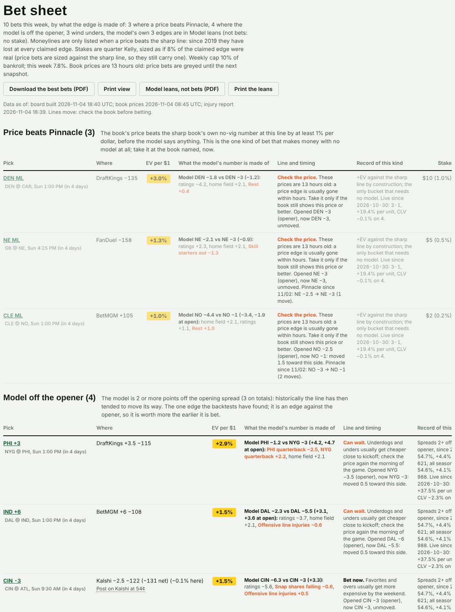
The NFL Bet sheet on November 11: no price bets, four opener bets and two wind unders. The EV column shows the record-adjusted figure with the model's own claim under it.
| Pick | The side and line, the game, the kickoff and how far away it is. |
| Where | The book to bet at, its line and price (and the net price after Kalshi's fee). For a price bet, the book that beats Pinnacle; for a bucket bet, the book with the best price against Pinnacle; otherwise the best book. "Post on Kalshi at X¢" when a resting order is worth placing. |
| EV per $1 | For a price bet, EV against Pinnacle's no-vig chance ("vs sharp"). Otherwise (from November 11) the record-adjusted EV, which counts the model's edge only at the share that has shown up in graded bets, with the model's own claim under it as "model +x%". On opener and wind rows both are in small type: read the Record of this kind column first. |
| What the model's number is made of | The model's line against the market, the gap now and at the open, and the three biggest pieces of the number. Red pieces are this week's news (quarterbacks, injuries, snaps, wind) rather than the season's ratings. |
| Line and timing | The verdict (below), where the line opened, where it is now, and Pinnacle's path since it opened. |
| Record of this kind | How this bucket has done in the backtest and, once graded, live. |
| Stake | Dollars and share of bankroll, after the bet, game and week caps. "(bucket)" means it was sized from the bucket's record, not the model. "No stake" on a college model edge, or on a kind muted by the closing-line-value guard. |
| Verdict | When |
|---|---|
| Bet now | A price bet (off-market prices are corrected within hours); an opener bet whose line is moving the model's way; a wind under (totals drop as the forecast firms); a favorite or over more than 36 hours out. |
| Missed | The market has moved to the model, or the total has already dropped for the wind. The edge at the opener is mostly gone. The teaser leg (section 4) is the way in, if it clears. |
| Check the price | A price bet built on book prices more than 3 hours old. The row is greyed. Take it only if the book still shows that price or better. |
| Can wait | An underdog or under (not a wind under) more than 24 hours out: those usually get cheaper close to kickoff. |
| Wait, or size down | The line has gone a point or more against the model since the open: the market disagrees. |
| Now or never | Under six hours to kickoff. |
No price bets. The book prices were 11 hours old when the board was built and nothing beat Pinnacle by 1%. That is normal on a Wednesday; price bets appear after a fresh snapshot and are usually gone within hours, which is why the scheduled backup for skipped snapshots matters.
SEA −6.5 (DraftKings −108), MIN +3.5 (BetMGM −112), LAC +4.5 (FanDuel −110), KC −3.5 (DraftKings −102) (opener tier, $1 to $9 bucket stakes): the model was 2 or more points off each opener. Look at the EV column: record-adjusted −1.4% to −2.6%, with the model's own +0.9% to +3.0% under it in small type. On EV alone none of these is a bet. They are on the sheet because bets of this kind have won 54.7% since 2019, which is what the Record column says, and why the stake says "(bucket)". SEA, MIN and KC say "Bet now"; LAC says "Can wait" (underdogs usually get cheaper). MIN's best price is at BetMGM: if you only bet DraftKings and FanDuel, check their price on the same number, or wait for the kickoff alert, which does that for you.
Under 51 BUF at NYJ, Under 40.5 HOU at CLE (wind, 11 mph forecast, $8 and $11 at half stake): bet now, before the totals drop. Their EV is negative on both readings; they are bet on the bucket's record, not the model's opinion.
That is six bets and 3.7% of bankroll. The model's five NFL edges are in Model leans, and I don't bet them.
Every bet that appears on the sheet is written into the ledger the first time it appears, at that price, and never changed. If the board later changes its mind (a quarterback ruled out, a line that moved to the model), the bet comes off the sheet and the ledger marks it withdrawn. By November 11 the NFL ledger had 119 bets: 29 kept on the sheet (to kickoff, or still on it this week) and 90 withdrawn before kickoff, most of them by the "Missed" rule. Section 14 explains why both records are kept.
If the edge is the line moving toward the model, you want to know two things: where the model disagrees with the opener, and how far the market has already come. That is this section.
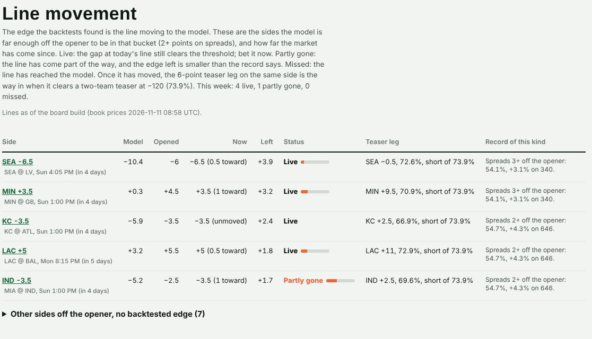
NFL Week 10 Line movement on November 11: four sides live and one partly gone.
| Side | The model's side at today's line, the game and kickoff. |
| Model / Opened / Now | All from that side's point of view: PIT −3.5 with model −7 means the model makes Pittsburgh a 7-point favorite. "Now" says how far the line has moved and which way. |
| Left | The gap still between the model and today's line, in points. |
| Status | Live: the gap at today's line still clears the threshold, or the line has moved no more than half a point. Bet it now. Partly gone: the line has come part of the way; the bar shows how much of the gap is closed. Missed: the line has reached or passed the model. |
| Teaser leg | The same side teased 6 points at today's line, its chance from the market's curve, whether it clears 73.9%, and a Wong tag. |
| Record of this kind | The opener report's row for a gap this size, on the holdout seasons. |
Only sides in a bucket that has made money against the opener on the holdout seasons:
| Board | Market | Threshold | Record at the opener |
|---|---|---|---|
| NFL | Spreads | 2+ points | 54.7%, +4.4% on 621 bets since 2019; 3+: 53.5%, +2.1% on 322 |
| College | Totals | 3+ points | 55.3%, +5.6% on 1,288 bets since 2021 (5+: 55.0%, +5.0% on 412) |
| College | Spreads | 5+ points | 54.3%, +3.5% on 735 bets (below 5 points: negative) |
Everything else that is off the opener, such as NFL totals (tracked on the Model record page, not yet a bet; section 14) and college spreads under 5 points, is folded under "Other sides off the opener, no backtested edge". Read it for what the market is doing, not as bets.
The board's build writes the section, and then every line snapshot re-measures it at Pinnacle's newest line, without a rebuild. The stamp under the heading says which line it used. Snapshots run three times a day, hourly from Sunday evening to Tuesday night (when new lines open), hourly on game days, and 35 and 20 minutes before each kickoff (section 17). Any snapshot that sends an alert also rebuilds that league's board NEW, any day of the week, so the Bet sheet is never older than the push you just got.
After every snapshot, any listed side that is new, or whose status changes (Live → Partly gone → Missed), is pushed to your phone through the ntfy app and posted to the "opener-alerts" issue on GitHub, which mentions you so the GitHub app notifies you too. A push reads like this:
NFL DAL -7.5 (ARI @ DAL): model -9.2, opened -6.5, now -7.5 (moved 1 toward); 1.8 left. Partly gone. 6-pt tease to -1.5 (72%, Wong)Setup (done once): install ntfy, subscribe to a private topic name, and save that name (just the name, not the ntfy.sh address) as the repository secret NTFY_TOPIC. The first push after setup lists every current gap; after that you only hear about changes.
New, Live: this is the moment the edge exists. Find the best price on the side (the sheet's Where column, or your books) and bet it.
Live → Partly gone: the market is moving your way. If you already have it, good: that is closing line value. If you don't, the straight bet is worth much less than its record says. Look at the teaser leg.
→ Missed: the line has reached the model. No straight bet. If the teaser leg clears 73.9% (often a Wong leg), it can go into a two-team teaser with another leg that clears.
College volume can be high: on November 11 the college board had 19 live sides, 11 partly gone and 9 missed in its buckets, against 4 live and 1 partly gone on the NFL board. Treat a very large college gap (the model at 58.3 on an Auburn–Mississippi State total that opened 51.5 and is now 50) as a reason to look, not a reason to bet.
Twenty minutes before each kickoff window, after the last pre-kickoff rebuild, the board sends that window's Best bets card to your phone (the same ntfy topic) and as a comment on the "best-bets" issue on GitHub, which emails you. Tapping the push opens the Best bets page on that league's board. It lists the card exactly as the Best Bets record will grade it, but at DraftKings and FanDuel only: each bet is shown at the better of the two that still qualifies under its own rule (a price bet must still beat Pinnacle's no-vig number; anything else must still be +EV). When neither book qualifies, the bet is listed as NOT A BET with the best price at the two books and the book the card used. A window with nothing on the card sends nothing.
Best bets: NFL Sun 1:00 PM ET (3 bets, 1 not at DK/FD)
NYG@PHI: PHI +3.5 -115 · DraftKings · stake 0.7% · EV +2.5%
NYG@PHI: Under 40.5 · NOT A BET at DraftKings or FanDuel (not +EV; best there: DraftKings Under 39.5 -105, EV -2.4%; card has it at BetMGM)This is the last word before kickoff. If you only bet DraftKings and FanDuel, it is the card to bet.
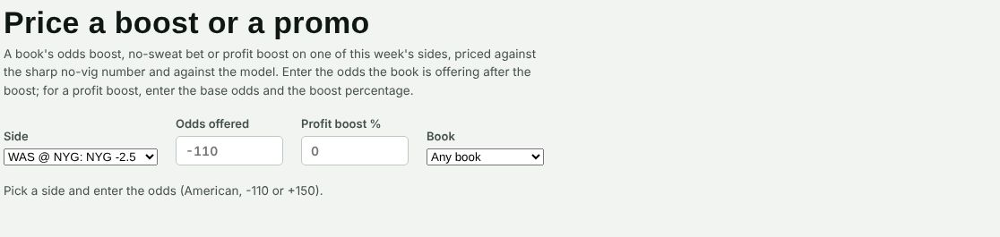
Pick a side, enter the boosted odds the book is offering (or the base odds and a profit-boost percentage), choose a book, and the calculator prices it against Pinnacle's no-vig chance and against the model. A boost that is +EV against the sharp number is the best bet a recreational bettor ever gets. Boosts are capped by the book, so size to the cap, not to the Kelly number.
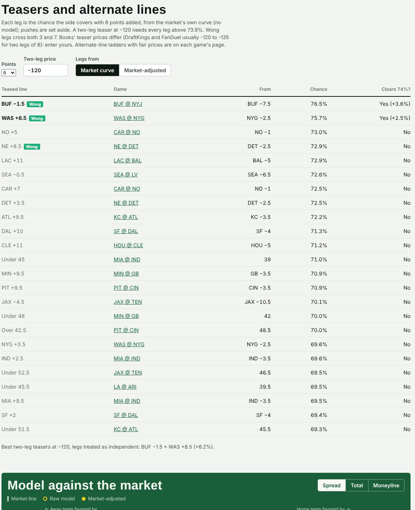
The teaser table on November 11: BUF −1.5 (76.5%) and WAS +8.5 (75.7%) are Wong legs that clear 73.9%; NE +8.5 is a Wong leg that does not (72.9%).
Choose 6 or 7 points and your book's two-leg price, and every leg is listed with its chance and whether it clears. "Market curve" prices legs with no model, which is the honest default. The table below lists the best two-leg pairs, treating the legs as independent. Two legs from the same game are not independent, and the board never pairs them. Each game's own page has a full alternate-line ladder with fair prices.
How this ties to Line movement: when an opener bet goes Missed, the straight bet is gone, but the side often becomes a good teaser leg, because the line has moved onto or across a key number. That is the "lower odds, tease the line" play.
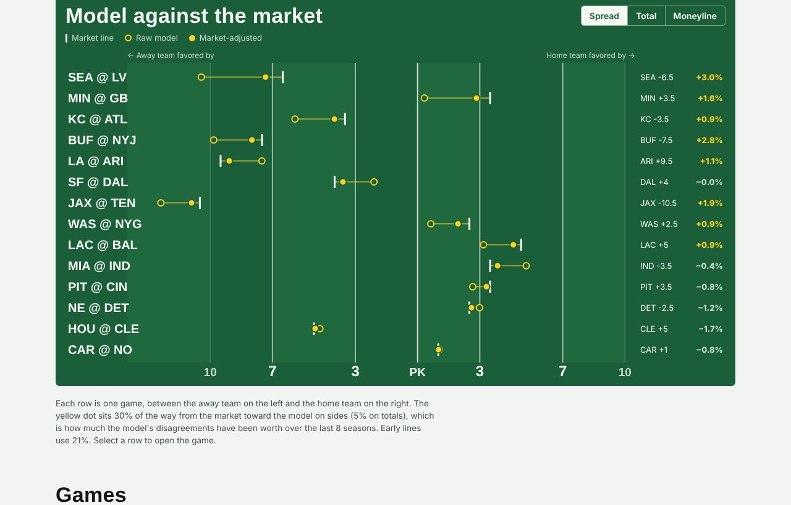
One row per game: the white tick is the market line, the hollow dot the raw model, the yellow dot the market-adjusted projection (28% of the way to the model on NFL spreads, 5% on totals, 17% for early lines). Switch between Spread, Total and Moneyline. The number at the right is the best EV on that market. It is the model's claim, so read it with the haircut.
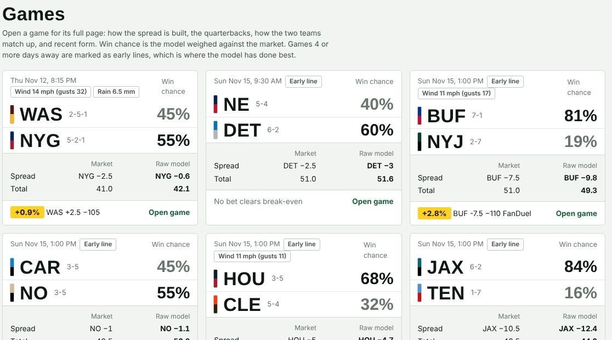
Game cards on November 11: WAS at NYG carries a wind tag (14 mph, gusts 32) and "Rain 6.5 mm"; BUF at NYJ a wind tag; "Early line" marks lines four or more days out.
Each card has the win chance (model weighed against the market), the market and raw-model spread and total, wind and rain or snow when they matter, and the single best bet with its book. "No bet clears break-even" is a perfectly good answer. Open a game for everything else.
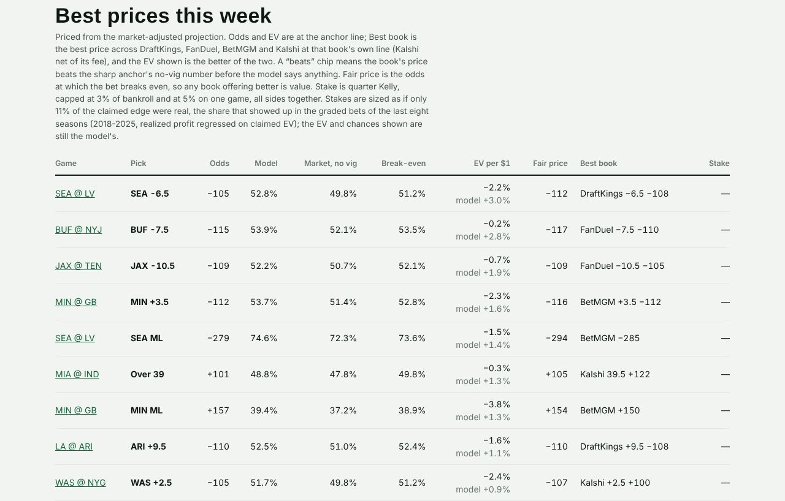
Every side the market-adjusted projection rates +EV, best first: model chance, Pinnacle's no-vig chance, break-even, EV, fair price, best book, and stake. A "beats" chip marks a price that beats Pinnacle on its own. On both boards most rows show no stake, because the model's own edges are not staked. This table is the model's view; the Bet sheet is the board's. The Games headline counts only the Bet sheet's bets, not this table's.
The board builds two documents every time it updates, both linked from the Bet sheet and from the landing page.
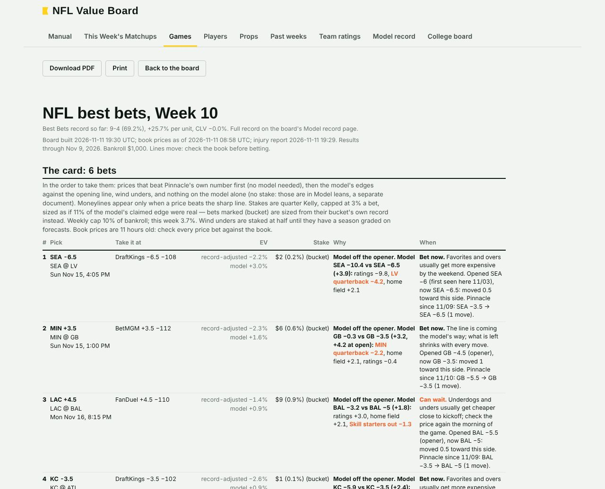
The week's card in the order to take it: every bet on the sheet with the book, price, EV, stake, why and when, then the teaser legs that clear −120 with the best pairs, the week's prop flags (NFL), and the records each kind of bet carries. The header shows when the board was built, how old the prices are, the weekly cap, and once games are graded, the Best Bets record to date. On the NFL board the card no longer includes the model's own edges or every game's lean: the card holds only bets.
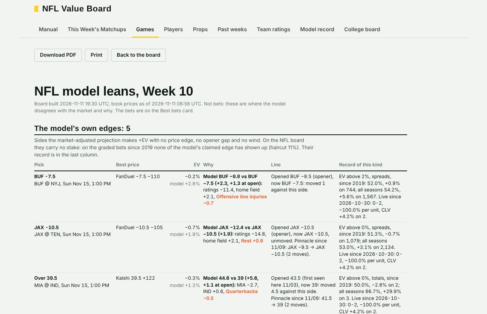
Two parts. On the NFL board, the model's own edges: sides the projection rates +EV with no price edge, no opener gap and no wind. On the graded bets since 2019 almost none of their claimed edge has shown up, so they carry no stake (model-only NFL spreads at EV above 0: 51.3%, −0.7% on 1,079 bets). They're kept here with their reasons and record. "Missed" marks one the market already moved to. On both boards, every game: where the model leans, with market, raw model and adjusted numbers, the board's side of each spread and total with its chance, the win chance, and notes (early line, wind, rain or snow, no sharp quote).
The PDFs show the board's first listed week at a $1,000 bankroll. The Print buttons print whichever week and bankroll you have selected.
Click any game (a card, a chart row, a pick) to open its page. Using Kansas City at Atlanta, Week 10:
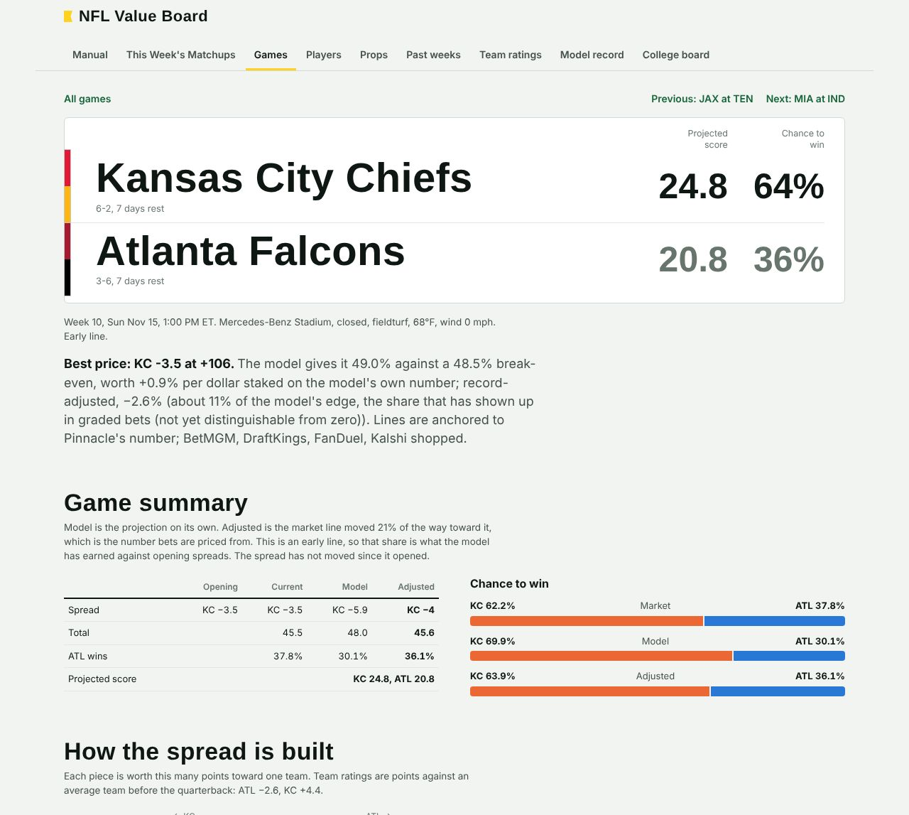
The top of the page: projected scores and win chances, the venue, weather and rest, the best price, and the Game summary.
| Header | Records, rest days, the projected score (24.8–20.8) and the win chance (KC 64%), with links to the previous and next game. |
| Best price | The single best bet and why, in one sentence. Here, KC −3.5 at +106: worth +0.9% on the model's own number and −2.6% record-adjusted, and the sentence says both. |
| Game summary | Opening, current, model and adjusted lines side by side, and the win chance three ways (market, model, adjusted) as bars. |
| How the spread is built | Every piece of the model's number in points: team ratings, home field, rest, each quarterback, offensive line injuries, skill starters out, snap shares. They add up to the model spread, and the same is shown for the total. This is where you check whether a disagreement is real ("KC quarterback −0.5", "Snap shares falling −0.4": this week's news, shown in red) or stale. |
| Quarterbacks | Each starter's EPA per dropback over the last eight games, against league average. |
| How they match up | Each offense against the other defense, with league ranks colored (1–6 best). |
| Recent form | Each team's last ten games: margin, result against the spread and the total. |
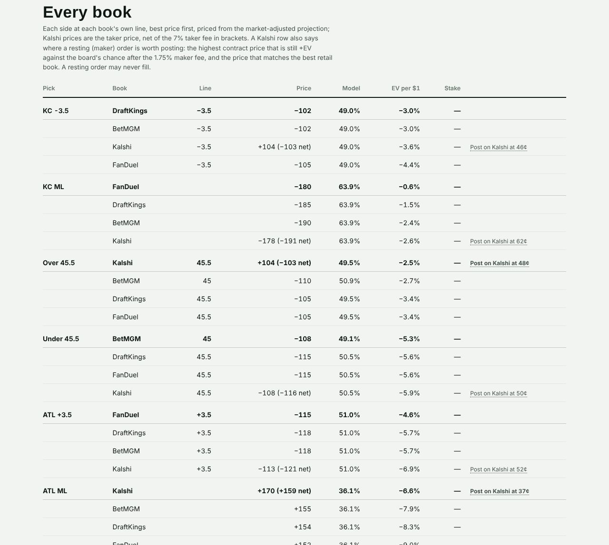
Further down: Every book, each side at each book's own line, best first, with Kalshi's resting-order prices.
| Every price | Each side at the anchor with model chance, no-vig chance, break-even, EV and best book. |
| Every book | Each side at each book's own line, best first, with "Post on Kalshi at X¢" where a resting order is worth it. This is the line-shopping table. |
| Derivatives | Team totals and first-half lines once fetched (NFL: Thursday, Saturday and Sunday mornings; college: Fridays). A derivative is a bet only when a retail price beats Pinnacle's own derivative quote. |
| Alternate lines and teasers | Fair prices at every alternate spread and total within 7 points, from the market's curve and from the projection, and the game's 6- and 7-point teaser legs. |
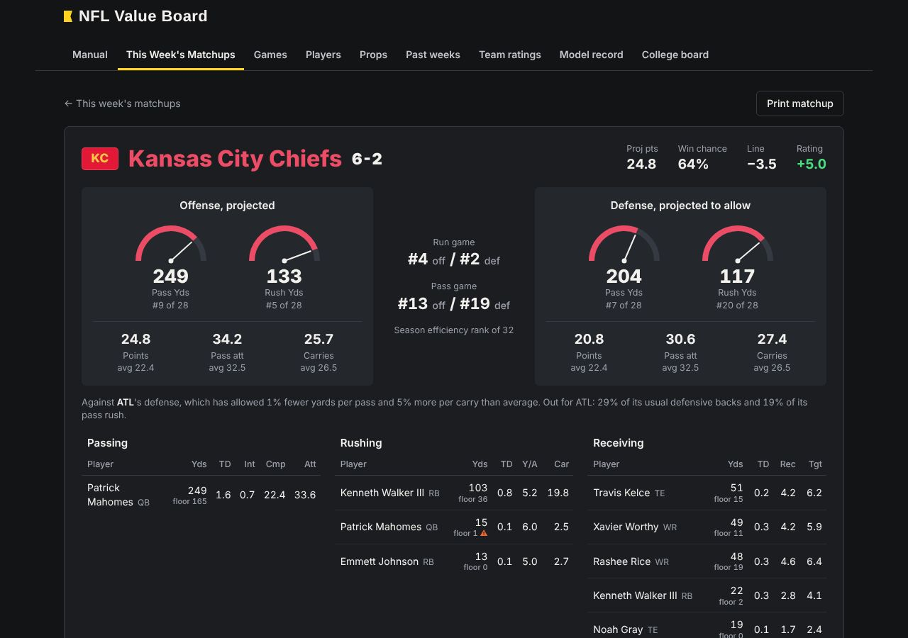
A matchup in the dashboards' dark style: each team's projected offense (passing and rushing yards on dials ranked against the week), what its defense is projected to allow, points, attempts and carries against season averages, and full player projections. The Matchups list shows the week's games with implied scores from the betting line. Past weeks' matchups are reachable from Past weeks. "Print matchup" prints one landscape page. This page is for understanding a game; it does not price bets.
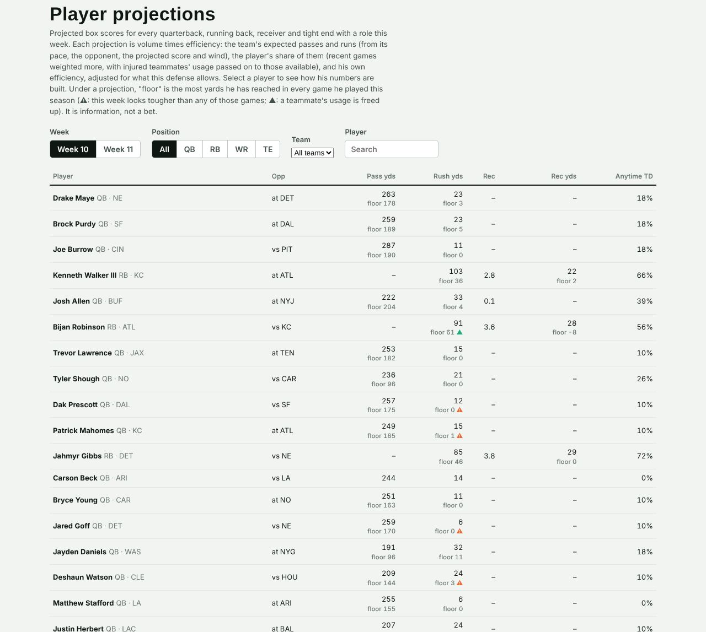
The Players page (November 11), with each player's every-game floor under his projection.
Projected box scores for every quarterback, running back, receiver and tight end with a role this week: pass yards, rush yards, receptions, receiving yards and anytime-touchdown chance. Each projection is volume times efficiency. Volume is the team's expected plays and the player's share of them; efficiency is his own, adjusted for the defense. Players ruled out get no projection. The superscript after a name is his injury designation (Q questionable, P probable; out or doubtful means no projection). Select a player for how his numbers are built.
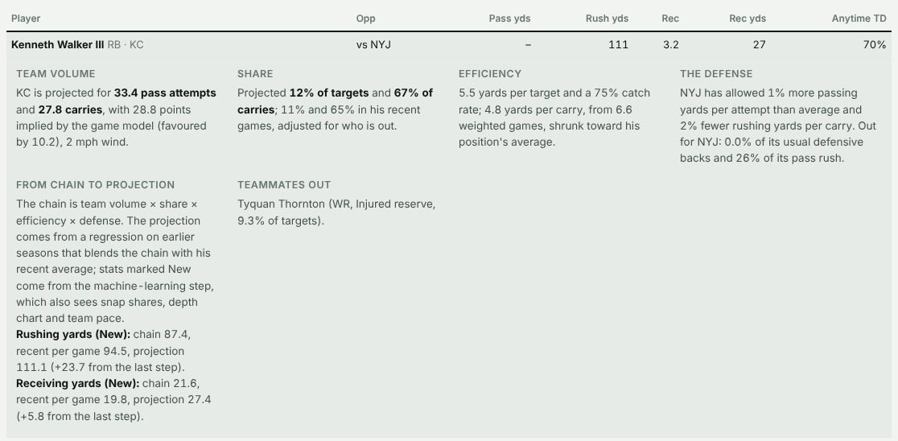
A player opened on November 11 (Kenneth Walker III): team volume, his share, his efficiency, the defense, From chain to projection, the every-game floor, and teammates out.
| Team volume | The team's projected pass attempts and carries, from the points the game model implies, the spread and the wind. NEW Since November 4 the NFL pass attempts also use each offense's pass rate over expected and the rate its opponent allows, and carries use what the opponent allows against what its opponents usually run. |
| Share and efficiency | His share of targets and carries (adjusted for who is out) and his yards per target, catch rate and yards per carry, shrunk toward his position's average. |
| The defense | What this defense allows, and who is out on it. NEW Projections now also use each defense's record against each position (wide receivers, tight ends, backs as receivers and as runners): what it allowed against what those players were projected for, applied as a small factor (typically 0.94 to 1.03 in the NFL, 0.85 to 1.09 in college, where the card's matchup line reads, for example, "KSU vs RBs: 6% fewer than expected"). |
| From chain to projection NEW | The chain (team volume × share × efficiency × defense), his recent average, and the projection that blends them, for passing, rushing and receiving yards. Stats marked New come from the machine-learning step that also sees snap shares, depth chart and team pace. |
None of this is a bet: against DraftKings and FanDuel the books' prop prices are still the better forecast (section 11). The projections feed the Props page, the Parlays page's prop legs and This Week's Matchups.
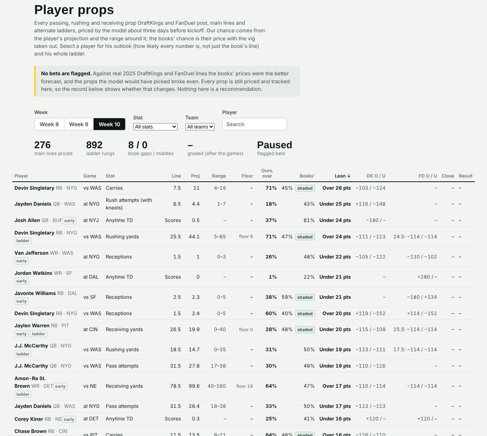
Every DraftKings and FanDuel player prop (main lines and alternate ladders), priced by the projections about three days before kickoff. The banner is the most important part: no bets are flagged. Against real 2025 lines the books' prices were the better forecast (Brier score 0.118 for the books against 0.135 for ours; lower is better), and the props the model would have picked broke even. Every prop is still priced and tracked so that a future change can be measured. The opening snapshot is now retaken each day until the books have posted yardage lines, so opening prices fill in sooner. NEW Player props are bet, if at all, through the Parlays page, where their chances start from the books' own numbers (section 16). Two things here are book error rather than model opinion and are worth a look: a book gap (DraftKings and FanDuel a step apart) and a middle.
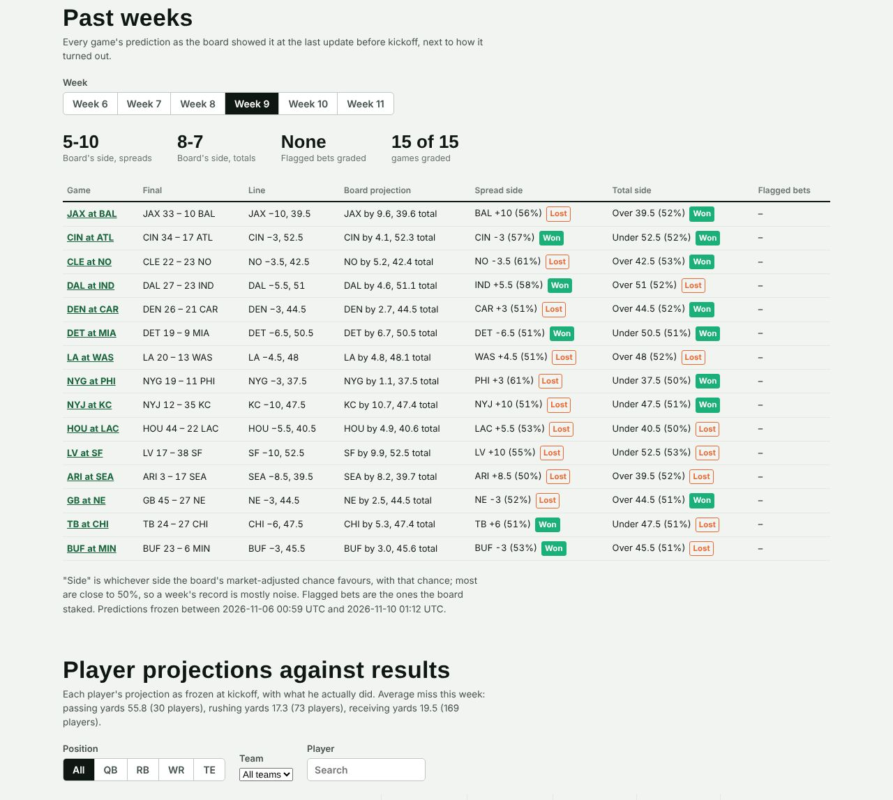
Every game as the board saw it at its last update before kickoff, next to how it turned out: the board's spread and total sides with their chances (won or lost), and the flagged bets. Below that, Player projections against results: each player's projection frozen at kickoff next to his actual line, paired column by column and sortable, with the week's average miss. Season-to-date tables follow. Archived weeks are never rewritten.
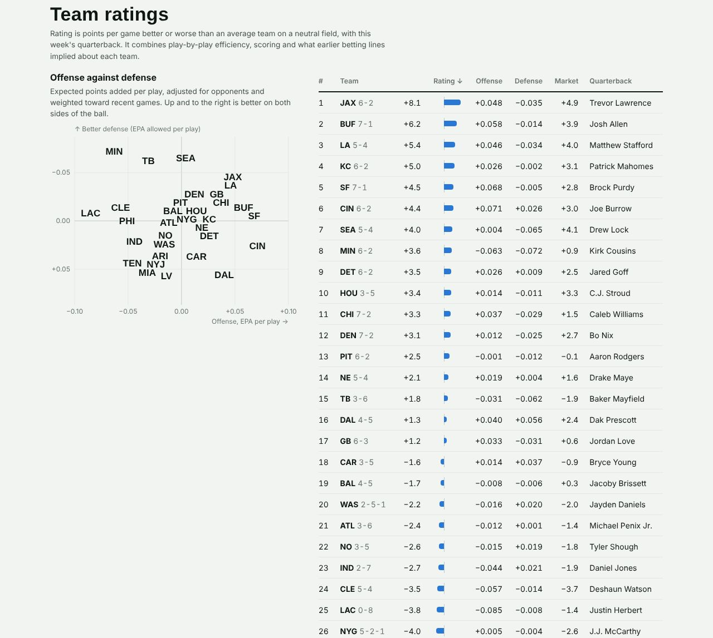
Each team's rating in points against an average team on a neutral field, with this week's quarterback: offense and defense in EPA per play adjusted for opponents, and the rating the betting market implies. The chart puts offense across and defense up; up and to the right is good at both. When the model's rating and the market's differ by a lot, that team drives most of the model's disagreements.
The Model record page carries three records. They answer three different questions.
| Record | What it counts | The question it answers |
|---|---|---|
| Live record | Every bet the sheet ever flagged, at the first price it was flagged at; graded on the result and on closing line value. | If you acted on the board's first word, how did you do? |
| Best Bets record | Only the bets on the Best bets card as it stood when each game kicked off, at the card's book, line, price and stake. | If you bet the card, how did you do? |
| Track record (the backtest) | Every game since 2014 (NFL) or 2017 (college), projected out of sample and graded at the closing price. | Is the model any good, and which kinds of bets have paid? |
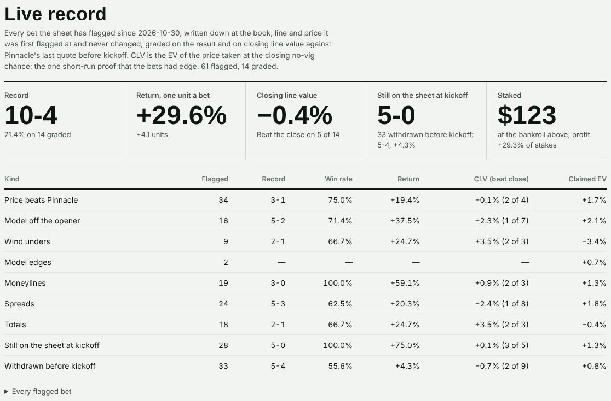
The NFL Live record on November 11: 119 flagged, 54 graded, 28-26, −5.0% a unit, closing line value +1.8%. The DraftKings + FanDuel row is 22-17 with closing line value +2.9%; the other books are 6-9 and −1.1%.
Tiles for the record, return per unit, closing line value and stake, then a row per kind and per market. It reads both ways: the tile Still on the sheet at kickoff counts bets the board kept to the end, and the table adds rows for kept and withdrawn. Withdrawn bets are labelled in the row list. In a few weeks this tells you whether the board's changes of mind (a quarterback ruled out, a line that moved to the model) are adding value. On November 11 the kept bets were 9-6 and the withdrawn ones 19-20: still too few to say anything. From November 11 the table also has DraftKings + FanDuel (the books you bet) and Other books: the board flags prices at BetMGM and Kalshi as well, so the first of those rows is the record of the bets you could actually have placed (22-17 on November 11, against 6-9 at the other books). The Best Bets record has the same two rows. On the college board the closing line value column was empty until November 11; it is filled now, for past bets too.
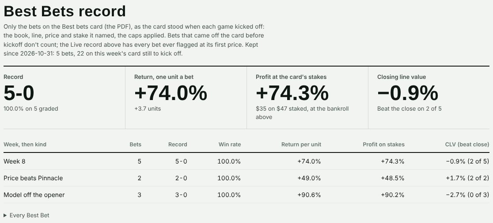
Started October 31, 2026. Each build logs the card: a bet that appears, changes book, line, price or stake, or leaves. When a game kicks off, the last version of its card counts. Tiles show the record, return per unit, profit at the card's stakes (what your bankroll actually did) and CLV. The table shows the record by week, then by kind, and the full list is underneath. The Best bets PDF quotes the record so far in its header. On November 11 the NFL card was 9-4 (+25.7% a unit, $41 on $111 staked, closing line value 0.0%) and the college card 44-42 (−2.1% a unit, closing line value −2.4%).
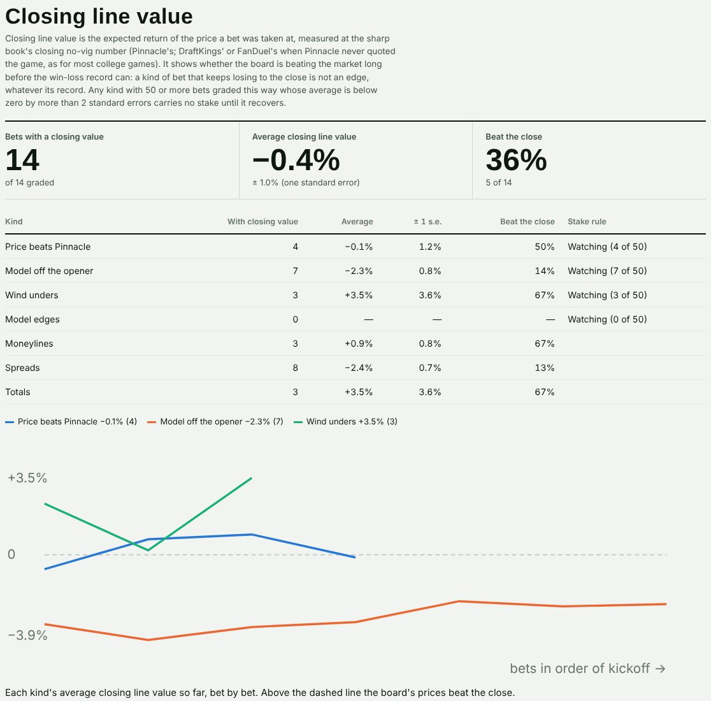
The Closing line value section on November 11: 54 NFL bets with a closing value, averaging +1.8% ± 1.7%; each kind's stake rule ("Watching 26 of 50"), and each kind's running average, bet by bet.
CLV is the EV of the price you took, measured at the closing no-vig chance. It's the one short-run proof that bets had edge: a bettor who beats the close consistently wins in the long run, whatever this week's results say. Fifty bets won't separate skill from luck on wins and losses; they will on CLV. Price-tier bets should show positive CLV almost every time. Opener bets should show it whenever the line moved toward them, which is the whole idea.
The section has its own tiles (bets with a closing value, the average with its standard error, how often the close was beaten), a table by kind and by market, and a chart of each kind's running average. The Stake rule column says where each kind stands under the closing-line-value guard (section 2): "Watching (n of 50)" until it has 50 graded bets, then staked, or muted if it is losing to the close by more than two standard errors. The close is Pinnacle's last quote before kickoff; where Pinnacle never quoted a game, as for most college games, DraftKings' and then FanDuel's closing no-vig number is used.
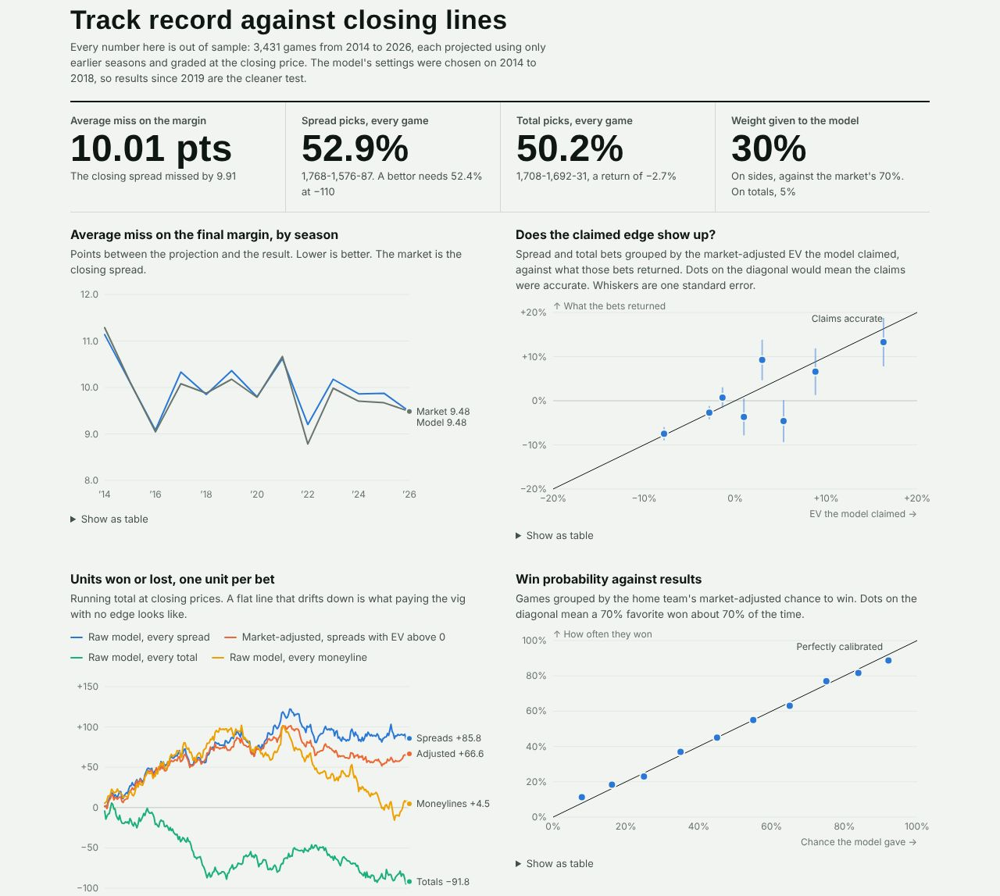
Every number is out of sample: 3,431 NFL games from 2014 to 2026, each projected using only earlier seasons and graded at the closing price. Settings were chosen on 2014–2018, so results since 2019 are the cleaner test. The headline tiles: average miss on the margin 10.01 points (the closing spread 9.91), spread picks every game 52.9%, total picks 50.2%, weight given to the model 30% on sides and 5% on totals. The backtest is rerun in full each Tuesday (NFL) and Monday (college), so model changes show up in these tiles from the next full run. A By part of the season NEW table (now on both boards) splits the holdout seasons into weeks 1–4, 5–9, 10–14, 15–18 and the playoffs, with the average miss for the raw model, the adjusted projection and the line, and how often each picked the winner. The charts show the miss by season, whether claimed EV showed up (the dots should sit on the diagonal; they mostly don't), units won or lost, and calibration of win chances (which is good).
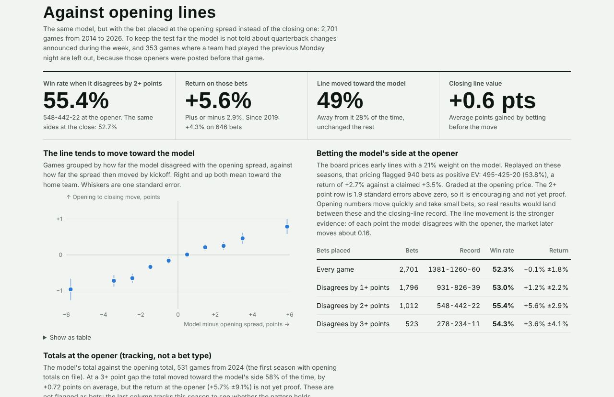
Against opening lines replays the model against the opening spread: 2,701 games, with games after a team's Monday-night game left out because their openers were posted before that game. At 2+ points of disagreement the model's side won 55.4% at the opener (548-442-22, +5.6% ± 3.0%; +4.3% ± 3.7% on 646 bets since 2019) and 52.7% at the close. The line moved toward the model 49% of the time and away from it 28%. That table is the basis of the opener tier, the Line movement section and the phone alerts. Wind unders shows the 10–19 mph record by era. Key numbers shows how often NFL games land on each margin (3 and 7 above all), which is why a half point through 3 is worth so much and why Wong legs exist.
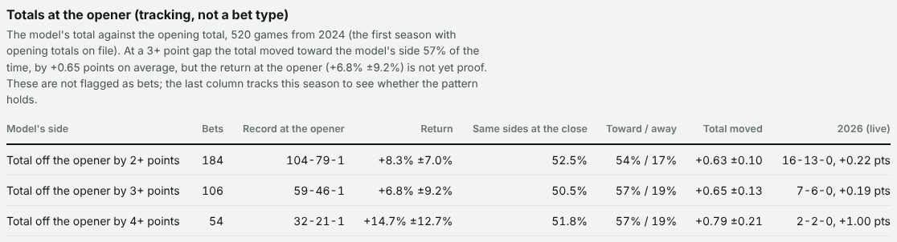
Under Against opening lines, a tracking table replays the model's total against the opening total (531 games since 2024, the first season with opening totals on file) at 2+, 3+ and 4+ point gaps: the record and return at the opener, the same sides at the close, how often and how far the total moved toward the model, and a column for this season. At 3+ points the total moved toward the model 58% of the time, by 0.72 points on average, but the return at the opener (+5.7% ± 9.1%) is nowhere near proof. These are not bets, and nothing on the sheet uses them. The live column is there to see whether the pattern holds.
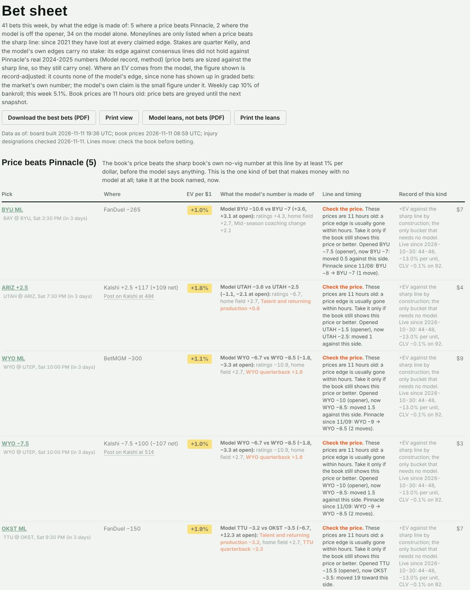
The college Bet sheet on November 11: five price bets (greyed, "Check the price": the prices were 11 hours old), two opener totals, then 34 model edges listed with no stake, whose record-adjusted EV is the market's own number with the model's claim under it. The week uses 5.1% of the cap.
| Model edges: no stake NEW | The haircut measured on consensus lines is 52% (2,434 bets 2018–2025: claimed +3.6%, realized +1.7%), but regraded against Pinnacle's real 2024–2025 lines the college model's edge did not hold. Since November 1 the haircut is capped at 0: model edges are still listed on the college sheet and the Best bets card (so they are recorded and graded), but they carry no stake. Price bets and opener totals are sized as before. The Best Bets record's college Week 9 model-edge stakes were set before this change. |
| Opener tier: totals only | College spreads off the opener have lost on the holdout seasons at every threshold below 5 points, so no college spread is ever in the opener tier. College totals 3+ points off the opener: 55.3%, +5.6% on 1,288 bets since 2021. A side marked Missed there means the total has already moved to the model. |
| Line movement | Lists college totals 3+ and spreads 5+ off the opener (735 bets, 54.3%, +3.6%). Expect many more rows than the NFL. |
| No wind tier | The college wind record (53.5%, +2.2% ± 2.3%) is not strong enough to bet on its own. |
| Props | The college board has no Props page. Live DraftKings and FanDuel college player props NEW are fetched for the Parlays page and priced at the books' own numbers there (section 16). |
| Backtest | 6,918 games from 2017 to 2026; holdout from 2021. Average miss 12.41 against the market's 12.16 (about even from week 6 on). |
| Quarterbacks and injuries | College starters come from the CFB dashboard's starter list, and injury designations from Covers.com, checked each morning. NEW A College availability log also records every change to those designations, ESPN's injury lists and the SEC, ACC, Big 12 and Big Ten availability reports, with the time each change was first seen. It is history for testing; the board still uses Covers. |
| Prices and the close | The same five books. Many smaller-conference games have no Pinnacle quote; those use the consensus line, and the card says "no sharp quote". For closing line value, those games use DraftKings' and then FanDuel's close. |
| How the spread is built NEW | Since November 4 the college spread card has two more rows, Coverage defenders out (the share of a team's main coverage defenders who recorded nothing in its last game) and Mid-season coaching change, and "Returning defensive production" is now Returning production. Section 17 lists the other college model changes. |
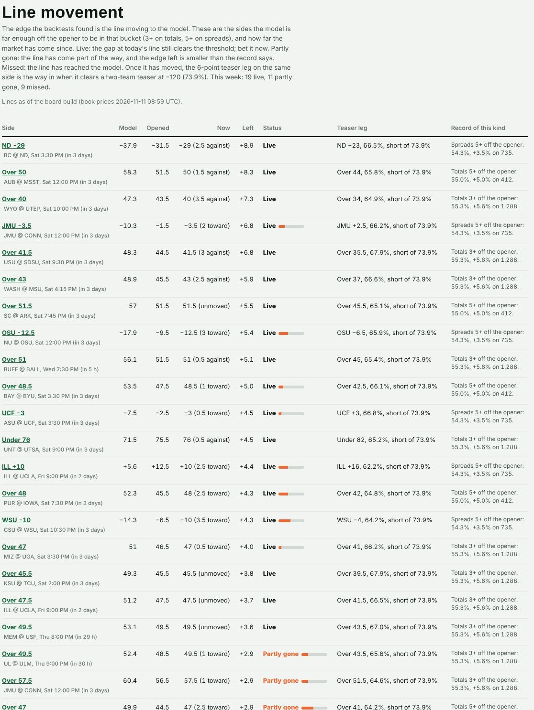
College Line movement (November 11): 19 sides live, 11 partly gone, 9 missed.
The Parlays page (rhyman7.github.io/fb-value-board/docs/parlays.html, linked from the landing page under both boards) builds and prices parlays from both boards' legs: spreads, totals, moneylines, moved lines and player props, NFL and college, at DraftKings and FanDuel. It has five tabs.
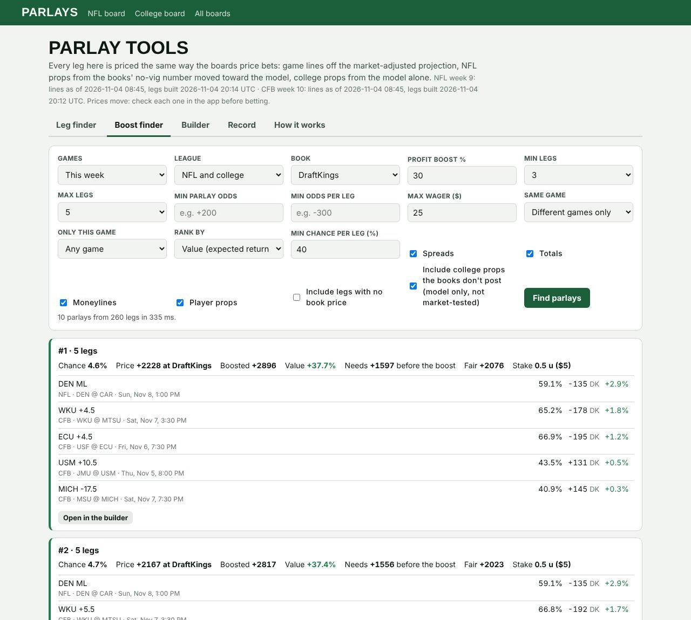
The Boost finder on November 11: a 30% profit boost at DraftKings, $25 maximum wager, 3 to 5 legs from different games. The top card is a 5-leg parlay at +2932, boosted to +3812, worth +43.4% with a 3.5% chance of cashing and a half-unit stake.
| Leg finder | The best parlays of 2 to 10 legs, ranked by value or by chance of cashing, with filters for the games (this week, next week's early lines, or both), league, book, minimum parlay odds, minimum odds and chance per leg, markets, and same-game rules. Only this game limits every leg to one game you pick. |
| Boost finder | The same search for a profit boost: enter the boost %, the minimum and maximum legs, the minimum parlay odds and the boost's maximum wager. If the boost names one game (a Thursday, Sunday or Monday night game), pick it in Only this game. |
| Builder | Search for any leg (tick "Show moved lines" for alternate spreads and totals), add it to the slip, or open a parlay from the finders. Enter the price the app quotes and any boost, and it shows the joint chance, the fair price, the price needed to break even, and the value at the app's price. |
| Record | A graded record of what the tools would have suggested: every leg worth at least break-even at DraftKings or FanDuel and 35–95% to win, and the Leg finder's best 2-leg and 3-leg parlays at each book, logged before kickoff at the price then and graded after the games, one unit each. |
| How it works | The method in plain words, and why "chance of cashing" is not the goal. |
| Chance | The chance every leg wins. A pushed leg drops out, as the books settle it. Legs in different games multiply; legs in the same game move together, priced from correlations fitted on past games (a quarterback's yards with his receivers', a side with the total, a player's yards with his team covering, a quarterback's touchdown passes with a teammate's touchdown). |
| Price / Boosted | The parlay's price at the book, and after the boost. |
| Value | Expected return per dollar at the book's price (after the boost). Negative value is the book's edge. |
| Needs | The price the parlay must pay to break even. If the app quotes more, it is a good bet; less, it is not. |
| Fair | The price with no edge either way. |
| Stake | Quarter Kelly on a 100-unit bankroll ($1,000 at $10 a unit), in half units, at most 2 units and never more than the boost's maximum wager. Nothing is staked on a negative-value parlay. |
| Each leg | Its chance, its price at the book, and its own value. Prop legs also show the player's share of his team's targets or carries this game, his usual share when the two differ by 2 points or more, and "teammates out" when his team has players ruled out. |
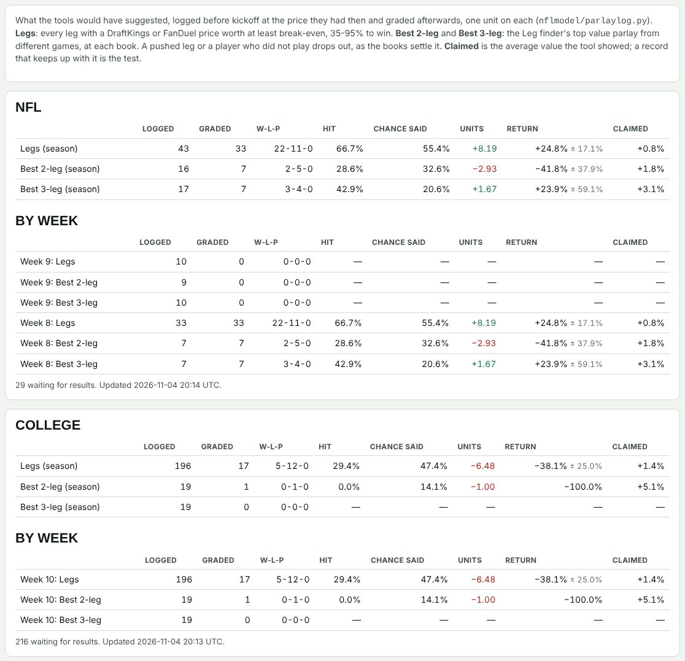
The Record tab on November 11: NFL legs 51-32 for the season (61.5% against the 55.5% the tool said), best 2-leg parlays 8-24, best 3-leg 8-26; college legs 399-376 (51.5% against 49.2% said).
A parlay without a boost is almost always negative value: every leg pays the book's margin. The page earns its keep with boosts. When a book offers one, enter it in the Boost finder, set the book, the maximum wager and the game if the boost names one, and take the top card at the book that offered the boost. Check every leg's price in the app first, and skip the parlay if the app quotes less than "Needs".
Don't rank by chance of cashing. Heavy favourites parlayed together lose more than they win: in 2025, alternate rungs priced −400 to −1000 cleared less often than their prices said. The boosted 5-leg card above, at +37.7% value, still loses about 19 times in 20. Stake it small and expect long losing runs.
Read the Record tab like the Best Bets record: is the hit rate near the chance the tool said, and is the return near what it claimed? On November 11 the NFL legs were 51-32 (61.5% against 55.5% said) and the college legs 399-376 (51.5% against 49.2% said); the best NFL 2-leg parlays were 8-24 (25% against 29% said). Two weeks of NFL legs still say little; the college legs are tracking what the tool claimed.
| What | When (Eastern) | What it does |
|---|---|---|
| Update board (NFL) | Daily about 7:17 AM; full backtest Tuesdays | Rebuilds the NFL board, ledger, Best Bets record and both PDFs. |
| Update college board | Daily about 8:43 AM, Saturdays also 12:43 and 4:43 PM; full backtest Mondays | The same for college. |
| Market lines | About 10 AM, 4 PM and 10 PM daily; hourly from Sunday evening to Tuesday night | Snapshots Pinnacle, DraftKings, FanDuel, BetMGM and Kalshi; re-measures Line movement; sends the phone alerts. |
| Market lines backup NEW | 40 minutes after each of the three daily snapshot times | GitHub often skips the daily snapshots. This scheduled check starts one plain snapshot if none ran in the last hour, and does nothing otherwise. |
| Game-day snapshots | Hourly at :50: college Saturdays 9:50 AM–7:50 PM, NFL Sundays 9:50 AM–4:50 PM, Thursdays 5:50 and 6:50 PM | Snapshots the league playing and rebuilds that board, so prices on the sheet are never much more than an hour old. |
| Derivatives | NFL Thursday, Saturday and Sunday mornings; college Fridays | Team totals and first-half lines. |
| Kickoff refresh NEW | 35 and 20 minutes before each kickoff window | Takes a line snapshot of the league about to play and rebuilds that board, then, after the 20-minute refresh, sends the Best bets alert (section 4). |
| Alert rebuilds NEW | Whenever a line snapshot sends a line-movement alert | Rebuilds that league's board, any day. |
| NFL props | Daily, plus every 10 minutes around kickoffs | DraftKings and FanDuel props: an opening snapshot (retaken until it has the yardage lines), a pricing snapshot about three days before kickoff, and closing prices. Also rebuilds the Parlays page's legs. |
| College props NEW | Daily about 7:13 AM; Saturdays also about 11:13 AM, 3:13 PM and 6:13 PM | DraftKings and FanDuel college props for games in the next day or two (on Saturdays, the next five hours), for the Parlays page. |
| QB starter check NEW | Monday to Saturday at noon | Compares each NFL team's starter on the board with nfelo's, which its author updates by hand when news breaks. Where they differ, it writes nfelo's starter into the overrides (never over a starter entered by hand) and rebuilds the board. |
| College availability NEW | Every two hours Wednesday to Friday, hourly Saturday, daily otherwise | Logs every change in the college injury designations and availability reports. History only. |
GitHub often starts scheduled runs late, sometimes by an hour or more, so always read the "Data as of" line. Play-by-play and results come from nflverse (NFL) and cfbfastR/CFBD and ESPN (college); injuries from the official NFL report, with hand overrides when the news is ahead of the report. Lines and prices come from The Odds API. Every week's predictions are frozen at kickoff and never rewritten.
Every model change is tested before it touches the board: the rule for passing is written down before the test runs, the test is walk-forward (each season projected only from earlier ones), and it is scored on the tuning seasons, the later holdout seasons and, where there are any, real DraftKings and FanDuel lines. From November 4 to November 10 the rule was: anything that makes the model more accurate is kept, however small, as long as it is better on every measure the test reports and worse on none. Since November 11 it is stricter: better on every measure on both the tuning seasons and the holdout, the holdout by at least one standard error, and anything kept is provisional until it has been rechecked on the next full season it has not seen (small gains under one standard error are as likely noise as signal; the November 4 to 6 college additions were slightly better on the seasons tested and slightly worse on 2026). Mixed results go to Ryan as trade-offs. Changes to the player projections are also scored as the board is mid-week, before game-day inactives are known. Everything kept under the earlier rule is judged on the 2026 season alone in January. The changes kept on November 4:
| Board | Change | What it moves |
|---|---|---|
| NFL | Spread ratings leave out interceptions and lost fumbles (turnover-free pass and rush ratings) | NFL spreads by about 0.2 points on average; no bet added or removed in Week 9 |
| NFL | Team pass attempts use pass rate over expected; carries use the opponent's carries allowed against its opponents' usual | Player projections (Players, Props, Parlays prop legs); not the game lines |
| NFL | Parlays prop nudge cap 3 → 7.5 points | The chance shown on NFL prop legs; value still scored on the books' number |
| Both | Defense against each position in the player projections | Receiving and rushing projections, by a few percent |
| College | Six game-model changes: coverage defenders out, drive value, mid-season coaching change, a lower rating for an unknown backup quarterback, returning offensive production and line yards in the total | College spreads by about 0.4 points on average (up to 2.9 for teams with a coaching change); no bet added or removed in Week 10 |
| College | Rushing and receiving calibrated per position group (backs, quarterbacks, receivers, tight ends) | Each player's projection by a yard or two |
| College | PFF route share and snap share in the receiving projections | Nothing yet: it turns on once PFF's 2026 data is pulled |
| College | College-fitted widths for the prop legs the model prices itself | Parlays page only, legs the books don't post |
Tests that did not pass are written up too (FEATURES.md, PLAYERS.md and PROPS.md in the repository), so nothing is tried twice by accident.
Next week's lines open Sunday evening and Monday. The Market lines snapshots run hourly then, and every new gap pushes to your phone. This is the most valuable window of the week. When a push says New, Live, open the Line movement section, check the side's "What the model's number is made of" for stale news, and bet it at the best price. By Tuesday night most of the movement has happened.
Watch for Live → Partly gone pushes on bets you hold. That is closing line value arriving. Check the injury report (it changes the model's number, shown in red) and the Bet sheet after each morning's update. NFL quarterback changes now reach the board automatically by noon, Monday to Saturday, through the starter check. A bet that leaves the sheet is marked withdrawn. That is the board changing its mind, and you should know why before you do anything about it.
A loss on a bet that beat the closing line was a good bet that lost. A win on a bet that the line moved against was a bad bet that won. Review in this order:
Anchor. The book a game's projection is tied to: Pinnacle when it quotes the game, else the consensus.
Best bets alert. The final card for a kickoff window at DraftKings and FanDuel only, pushed to your phone and emailed 20 minutes before kickoff (section 4).
Best Bets record. The record of only the bets on the Best bets card as it stood at each kickoff (section 14).
Boost finder. The Parlays page tool that finds the best parlays for a profit boost (section 16).
Break-even. The win rate a price needs to be worth nothing: 52.4% at −110.
Bucket. A kind of bet with its own record: price, opener, wind, model.
Bucket stake. A stake sized from the bucket's record instead of the model's, at the book with the best price against Pinnacle; "(bucket)" on the sheet.
Check the price. The verdict on a price bet whose quote is more than three hours old.
CLV (closing line value). The EV of the price you took at the closing no-vig chance. Positive means you beat the close.
CLV guard. The rule that takes the stake off a kind of bet with 50+ graded bets whose closing line value is below zero by more than two standard errors; its bets stay listed, marked muted.
Close win rate. How the opener bucket's sides did graded at the closing line: 51.9% for NFL spreads 2+, below break-even.
Defense against each position. A defense's record against wide receivers, tight ends and backs, against what those players were projected for, applied to the player projections as a small factor.
EV. Expected value per dollar staked.
Haircut. The share of the model's claimed edge that has shown up as profit in the last eight seasons; stakes are sized from it. NFL 11% ± 29% on November 11 (model edges kept off the card); college measured 52% but capped at 0 since November 1.
Keep rule. Since November 11, 2026: a model change is kept if it is better on every measure its test reports, on the tuning seasons and the holdout, the holdout by at least one standard error; it is then provisional until rechecked on a season it has not seen. (November 4 to 10: any gain, however small.)
Record-adjusted EV. The EV at the chance the stakes are sized from: the model's edge counted only at the share that has shown up in graded bets. It leads wherever a model EV is shown, with the model's own claim under it.
Kept / withdrawn. Whether a ledger bet was still on the sheet at kickoff, or came off before.
Kickoff refresh. The line snapshot and board rebuild 35 and 20 minutes before each kickoff window.
Kelly. The stake that maximizes long-run growth for a given edge; the board uses a quarter of it.
Line movement statuses. Live (the gap still clears the threshold, or the line has moved no more than half a point), Partly gone (the line has come part of the way), Missed (the line has reached the model).
Leg finder. The Parlays page tool that ranks parlays of 2 to 10 legs by value or by chance of cashing (section 16).
Market-adjusted projection. The market's line moved part of the way toward the model (28% on NFL spreads, 5% on totals, 17% for early lines). Every bet is priced from it.
Missed. An opener bet the market has already moved to, or a wind under whose total has already dropped 1.5 points.
Model leans. The document of the model's opinions that are not bets (section 7).
Needs. On a parlay card, the price it must pay to break even.
No-vig. A price with the book's margin removed: the market's estimate of the true chance.
ntfy. The phone app that receives the line-movement pushes; the topic name is the repository secret NTFY_TOPIC.
Opener. The first line posted for a game. The board uses the data's opener (nfelo for the NFL, cfbfastR for college), the number the bucket was backtested on, then Pinnacle's first stored quote, then the first line the board saw.
Nudge. How far an NFL prop leg's chance is moved from the books' no-vig number toward the model on the Parlays page: at most 7.5 points. Value is still scored on the books' number.
Pinnacle. The sharp book every price is judged against.
Post at. The highest Kalshi contract price at which a resting (maker) order is still +EV against the chance the stakes are sized from.
Price tier. A retail price that beats Pinnacle's no-vig number by 1% or more, with no model.
Rain / snow tag. A game forecast to get 2 mm or more of rain, or any snow; shown, not bet.
Raw model. The model's projection before it is weighed against the market.
Teaser. A parlay with every line moved in your favor; two legs of 6 at −120 need each leg above 73.9%.
Vig. The book's margin.
Week 18 at the market. The model's Week 18 spreads and moneylines are not bet (opener and model tiers, alerts); price bets and totals still count.
Weekly cap. 10% of bankroll on one week's bets together; above it every stake that week shrinks by the same factor.
Wind under. An outdoor NFL under in 10–19 mph of forecast wind, staked at half size until graded on forecasts.
Wong teaser. A 6-point teaser leg that crosses both 3 and 7: a favorite of −7.5 to −8.5 or an underdog of +1.5 to +2.5. Price them, do not bet them by rule.
Fifth edition, updated November 11, 2026 from the live boards (fourth edition November 4, third October 31). The screenshots are re-shot with scripts/manual_shots.py. Numbers change every day; the explanations do not. For research and entertainment; nothing here is betting advice.